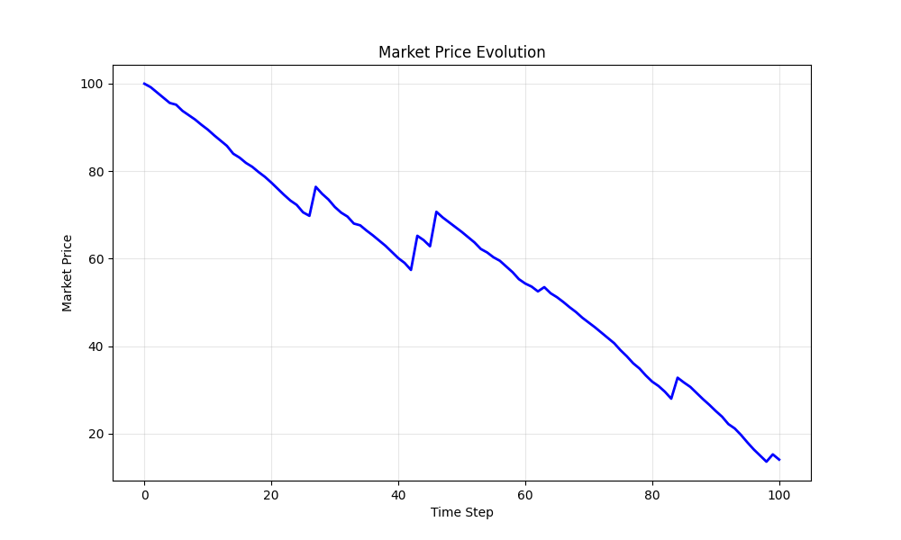
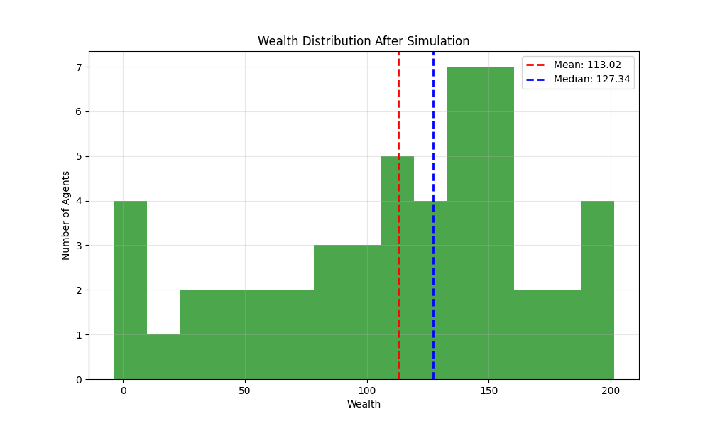
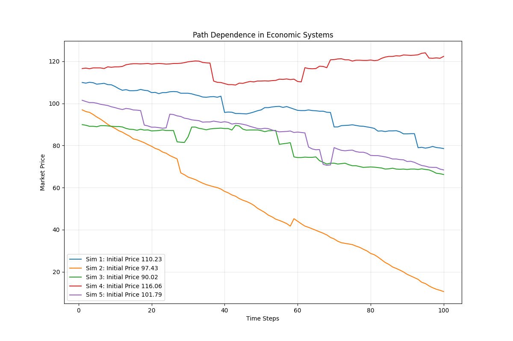
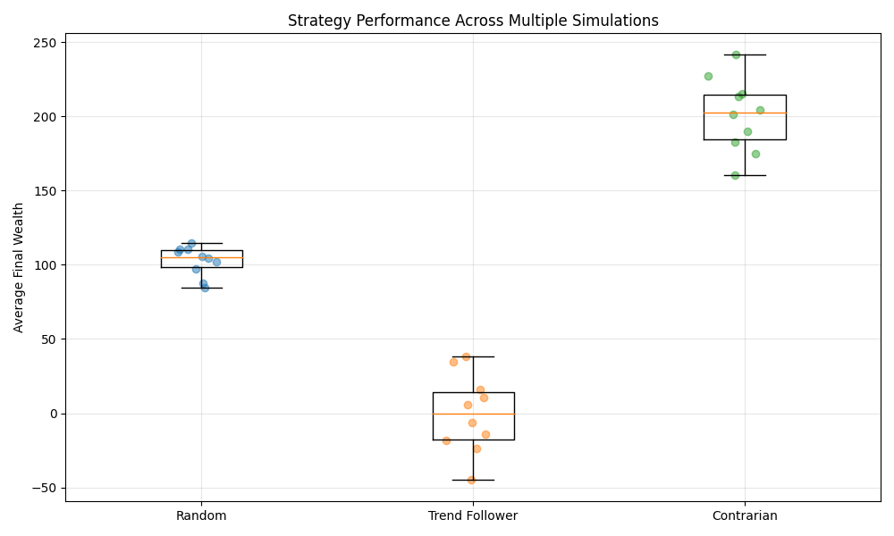
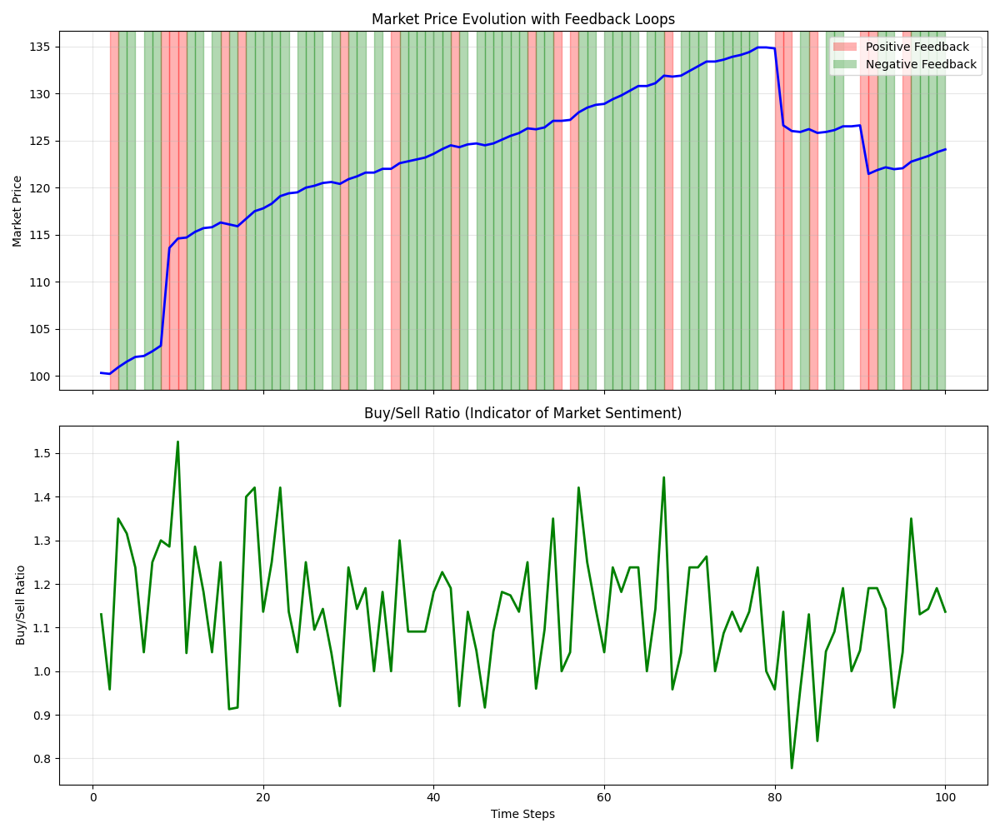

This simulation demonstrates a complex economic system with interacting agents, market dynamics, and emergent behaviors. The code models various economic agents with different strategies in a network structure, simulating market transactions and wealth evolution over time.
The simulation includes:
Agents make decisions based on price expectations and their strategy:
\[ E_i(t+1) = E_i(t) + \alpha \cdot (P(t) - E_i(t)) \]
where \(E_i(t)\) is agent \(i\)'s price expectation at time \(t\), \(P(t)\) is the market price, and \(\alpha\) is the learning rate.
Agents update their expectations based partly on connected agents:
\[ E_i(t+1) = \beta \cdot E_i(t) + (1-\beta) \cdot \frac{1}{|N_i|} \sum_{j \in N_i} E_j(t) \]
where \(N_i\) is the set of agents connected to agent \(i\), and \(\beta\) is a weighting parameter.
Market price updates based on supply and demand dynamics:
\[ P(t+1) = P(t) + \gamma \cdot (B(t) - S(t)) \]
where \(B(t)\) is the number of buy orders, \(S(t)\) is the number of sell orders, and \(\gamma\) is a price sensitivity parameter.
The network follows a power-law degree distribution:
\[ P(k) \propto k^{-\alpha} \]
where \(P(k)\) is the probability of a node having \(k\) connections, and \(\alpha\) is the scaling parameter.
Agent wealth evolves through market transactions:
\[ W_i(t+1) = W_i(t) + \Delta W_i(t) \]
where \(\Delta W_i(t)\) is the change in wealth based on the agent's action and the market price.
Wealth inequality is measured using the Gini coefficient:
\[ G = \frac{1}{n} \left( n + 1 - 2 \cdot \frac{\sum_{i=1}^{n} (n+1-i) \cdot x_i}{\sum_{i=1}^{n} x_i} \right) \]
where \(x_i\) are the sorted wealth values and \(n\) is the number of agents.
The simulation uses several methods to model complex economic behavior:
This economic simulation can be applied to study various phenomena including:
The scale-free network structure with preferential attachment:
The market price evolution over time shows patterns of stability, trends, and volatility:
The final wealth distribution demonstrates emergent inequality:
Multiple simulations with slightly different initial conditions demonstrate sensitivity and path dependence:
Performance comparison of different agent strategies across multiple simulations:
Emergent behaviors in the network structure and market dynamics:
Positive and negative feedback loops in the economic system:
